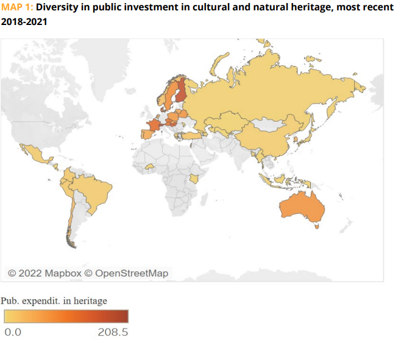

SDG 11, Indicator 4 aims to protect and preserve the world's cultural and natural heritage, including historic sites, monuments, and natural landscapes.
This indicator recognizes the importance of safeguarding the world's unique cultural and natural heritage for future generations.
Solutions that have been proposed include developing sustainable tourism practices, implementing conservation measures, and promoting community involvement in heritage preservation.
Many countries, NGOs, and companies around the world have taken steps towards safeguarding cultural and natural heritage.
For example, UNESCO has designated over 1,100 sites as World Heritage sites, and the International Union for Conservation of Nature (IUCN) works to protect natural heritage sites.
Companies such as Patagonia have also implemented sustainable practices to minimize the impact of tourism on natural heritage sites.
It is essential to continue efforts to safeguard the world's cultural and natural heritage to ensure their preservation for future generations.
